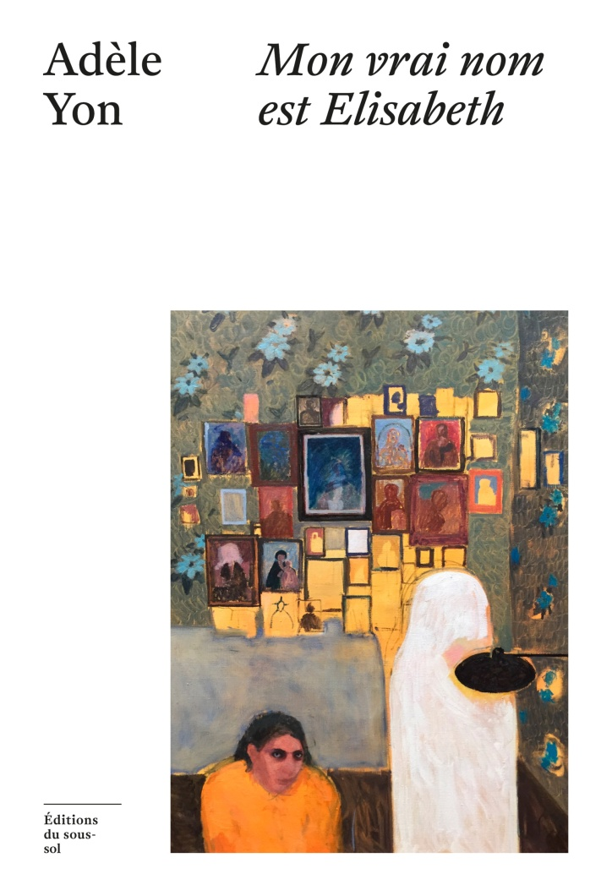

En matière de méchas, mon expérience se limite à Pacific Rim au cinéma et à de vagues souvenirs de Goldorak quand j’étais tout petit. Tout le contraire de Denis Colombi, qui connaît ses classiques et qui est aussi sociologue, raisons pour lesquelles ce tout petit roman (moins de 100 pages) a attiré mon attention. Au coeur des Méchas est écrit sous la forme du témoignage d’une mécano, qui nous raconte ce que ça fait de bosser à bord de ces géants de tôles conçus pour repousser des monstres extra-terrestres dans des batailles titanesques, mais anonymement, à l’ombre des pilotes célébrés en héros. L’envers du décor, en somme, et les questionnements qui vont avec. Un petit bouquin très malin qui se lit à peu près d’une traite en mêlant habilement réflexion sociale et grosses tatannes sur des monstres de l’espace.
Sortie : 2024
Mon vrai nom est Elisabeth est une sorte d’enquête autobiographique dans laquelle Adèle Yon alterne récit à la première personne, extraits d’entretiens et documents d’archives. Au fil de sa recherche, l’autrice met progressivement en lumière le traitement subi par son arrière-grand-mère Betsy. En ligne de mire : les institutions psychiatriques (certains passages sont difficiles à lire si on est un peu sensible), mais aussi familiales. Il est parfois difficile de s’y retrouver dans cette grande famille catholique et bourgeoise, mais j’ai beaucoup aimé l’écriture et les variations de styles (la qualité de l’édition ne gâchant rien). En confrontant les lettres échangées par Betsy et son mari André avec les souvenirs familiaux et administratifs, Adèle Yon montre très clairement que quelque chose ne colle pas, qu’on a bien vite oublié (ou voulu oublier) un certain point de vue dans la fabrique collective du récit sur Betsy. Invitée dans ce podcast, elle mentionne que qualifier son livre de roman lui convient, vu la quantité de fiction qu’il contient : c’est toute la prouesse de sa recherche d’avoir mis au jour cette dernière.
Sortie : 2025